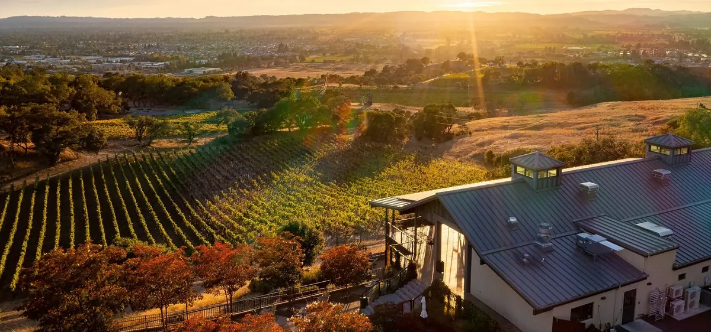

Sonoma County is big. It runs from the San Pablo Bay to the Mendocino line and from the Mayacamas Mountains to the Pacific, and it holds more than a dozen wine appellations. Pick the wrong base and you spend your trip in the car. Pick Santa Rosa and almost every major valley is a short drive in a different direction, with a real downtown to come back to at night.
That is the case for Santa Rosa in one sentence: it sits in the middle. Here is how to use it.
West: the Russian River Valley
The Russian River Valley starts on the western edge of town. Morning fog rolls in from the coast and burns off by midday, which is why the valley is known for cool-climate Pinot Noir and Chardonnay. Most estates are twenty to twenty-five minutes from downtown.
- Balletto Vineyards, a family farm turned winery with a relaxed tasting room and serious Pinot.
- DeLoach Vineyards, certified biodynamic and one of the valley's sustainability pioneers.
- Benovia Winery, small-production, cellar-worthy Pinot Noir and Chardonnay.
- Paradise Ridge, hilltop views and a sculpture garden a few minutes from town.
- Kendall-Jackson Wine Estate, seated tastings and walking garden tours at the brand's Santa Rosa home.
Martin Ray sits on Laguna Road on the west side of Santa Rosa. Head north toward Windsor and Healdsburg for Bricoleur Vineyards, Merriam Vineyards and the traditional-method sparkling wines at Breathless.
Southeast: Sonoma Valley and Kenwood
Highway 12 runs southeast out of Santa Rosa into the Sonoma Valley. The first stretch, around Kenwood, is only about twenty minutes away and holds some of the county's best-known tasting rooms.
- St. Francis Winery known for rich reds and chef-paired food and wine tastings.
- Kunde Winery, a fifth-generation estate with cave tours across 1,850 acres.
- Matanzas Creek, in the quiet Bennett Valley, famous for its lavender fields as much as its Sauvignon Blanc.
- Coursey Graves, a boutique Bennett Valley estate on Santa Rosa's southeast edge with a food-paired tasting experience.
North: Dry Creek and Alexander valleys
Twenty-five minutes up Highway 101 puts you in the Healdsburg area. Dry Creek Valley is Zinfandel country; Alexander Valley is warmer and built for Cabernet.
- Dry Creek Vineyard, the benchmark for Dry Creek Zinfandel, with picnic grounds out front.
- Ridge Lytton Springs, old-vine Zinfandel blends with a worldwide reputation.
- Wilson Artisan Wines, bold Zinfandel and Petite Sirah from a family operation.

No car? Taste downtown
You don't need to leave the city to drink well. A handful of tasting rooms sit inside the downtown grid, close enough to walk between after dinner.
- Stonemason Cellars on Davis Street, a small room with knowledgeable, personable staff.
- Trecini Winery on Beaver Street, open early in the week, so check before you go.
- D'Argenzio Winery on Cleveland Avenue, with a music-forward feel and a long family history in wine.
- Enology, the wine lounge at Hotel E on Old Courthouse Square, pouring Sonoma County by the glass.
And then there's the beer
Santa Rosa is one of the best beer towns in California. Russian River Brewing Co. on 4th Street is the one people cross the country for, home of Pliny the Elder and the annual release of Pliny the Younger. Nearby, Shady Oak Barrel House specializes in wild and barrel-aged sours, and Cooperage, Fogbelt, HenHouse and Moonlight round out a strong local lineup.
Plan it well
- Many estates are reservation only, especially on weekends. Book a day or two ahead.
- Pick one direction per day. Three or four tastings is plenty.
- Hire a driver or use a tour service if everyone wants to taste.
- Harvest, late August into October, is the busiest and most atmospheric time of year.
Why come back to town
This is the other half of the argument. After a day in the valleys, Santa Rosa gives you a walkable downtown with serious restaurants, cocktail bars and live music, and you can leave the car parked until morning. Our hotels, Art House Santa Rosa and Hotel E, are both a short walk from Old Courthouse Square.
For current hours, ratings and directions for every winery and brewery mentioned here, use the winery and brewery directory, or browse the wine and beer guide.
Plan your stay downtown
Browse hotels, restaurants, wineries and attractions, all in one place.
Open the directory